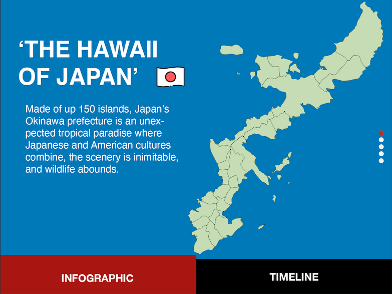
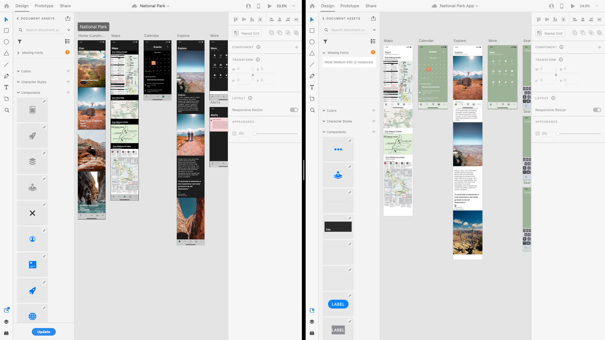
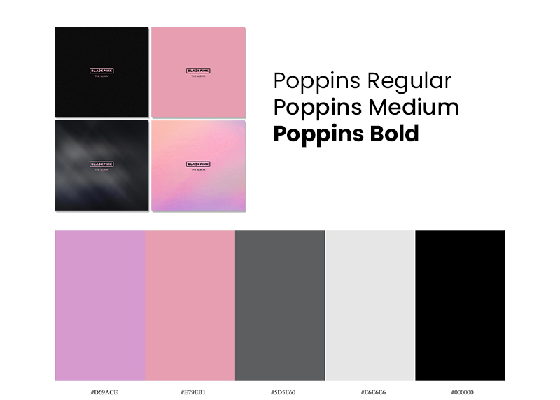
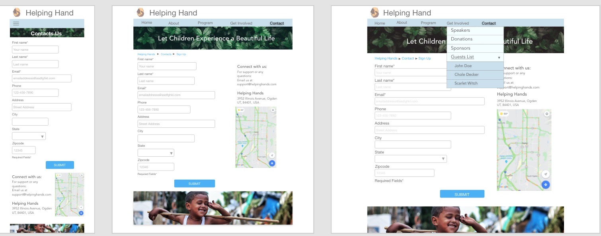
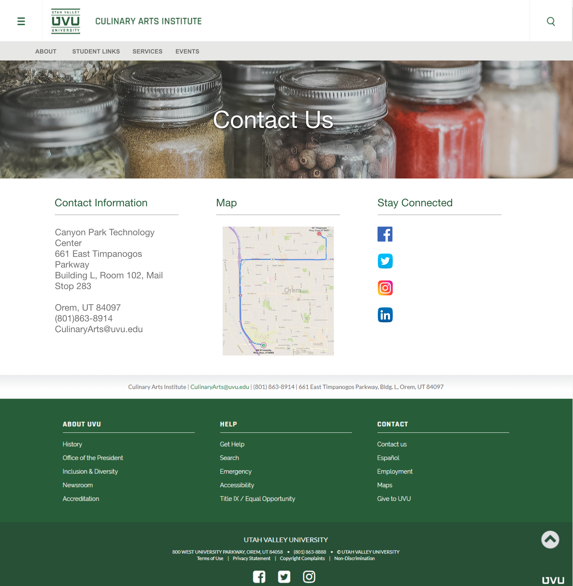

My Education
My name is Camille Hall. I am currently in Web Design and Development with Interaction and Design Emphasis. I started my journey at Utah Valley University thinking I would want to do computer science because I was invested in it and then I came to realize the computer science program was not what I wanted to do for the rest of my life. Luckily, I was able to comprehend that I wanted to do design rather than coding. I started pursuing a degree in web development and app emphasis, but then I recently switched to interaction and design. That decision was perfect for me because I enjoy designing and re-designing websites, and how I was able to learn and make beautiful and responsive websites.
My present education goals here at UVU are to learn and proceed into creating useful yet productive websites. I genuinely appreciate how UVU provides amazing tools for students to enroll and explore the world of digital media. I would love to learn more of the programming languages when creating websites. I know this career is a continuous process of gaining knowledge and skills and it will continue to grow especially with technology. I will take what I have learned from the past few years attending this school and will be able to apply it to my future work. My long-term career is to become a freelance web designer. To my knowledge, there is always good and bad in this field and I must prepare myself for the outcome. For it's worth, I cherish success as having the chance to do what I want and be passionate at the same time and share with my clients.
Interactive Kiosk Development
In my previous class, we were taught how to create an Attraction Loop using Kinetic Typography. Us students used music, text, or lyrics to create a 30-second animation that leverages typography while learning Hype 4.0 Professional's basic features. On top of that, I was able to build knowledge on using keyframes, scenes, and timelines when creating an Interactive Infographic. The project had many adjustments and arrangements. With this style guide, I was able to follow the order and learn from my mistakes.
My Styleguide - a link to PDF.
Download Zipped HTML5 - a link to zip.
Prototype
Creating interactive prototypes in Adobe XD allowed me to rapidly and visually changes and designs projects. It is very easy to use especially it interfaces with Photoshop and Illustrator. I enjoy doing prototypes especially on Adobe XD because it's simple and focused. It makes the design for websites or apps effortlessly move to create various links, buttons, animations, etc.
Zion National Park - a link Adobe XD Prototype.
Mood Board
A mood board used on which samples of various colors and textures are put together to help in deciding which elements complement each other. It's a way of including anything that helps a designer to define the direction of my project.
My Styleguide - a link to PDF.
Another example - a link to PDF.
Wireframes
A mood board used on which samples of various colors and textures are put together to help in deciding which elements complement each other. It's a way of including anything that helps a designer to define the direction of my project.
More wireframes example- a link to PDF.
Re-design
A few semesters ago, I took a certain class that allowed students to show their skills on redesigning the school's Culinary website.
My redesign - a link to PDF.